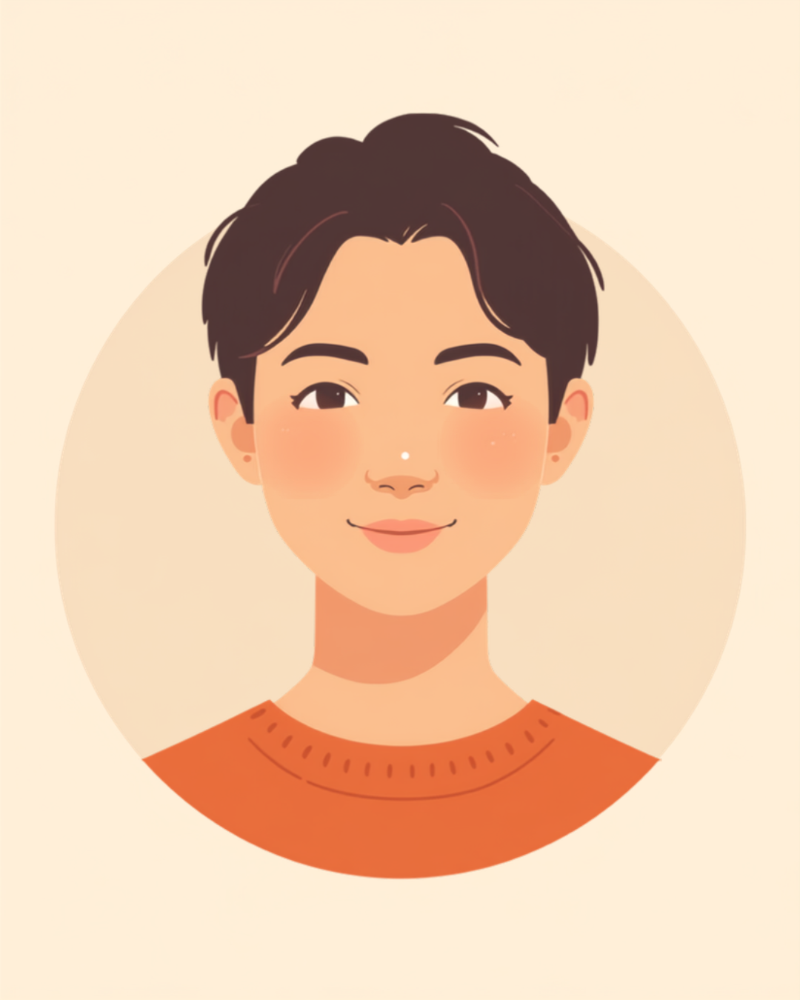

乾癬は、皮膚が赤くなって盛り上がり、白っぽい粉状のかさぶたのようなものがついてくる皮膚疾患です。自己免疫の働きが関わる病気で、人にうつることはないとされていますが、「乾癬」という名前の響きから感染症と誤解されやすいと言われています。仕事中は、見た目の変化やかゆみに気を使う場面が多く、半袖や更衣室、周囲の視線への気がかりを一人で抱えている方も少なくありません。この記事では、乾癬のある方が仕事の中で感じやすいしんどさと、職場での伝え方、使える制度を当事者の声をもとに整理しました（2026年8月時点の情報です）。
PR


「うつるんじゃ」という誤解と、言えないまま抱える気まずさ

乾癬は、免疫の働きが自分の皮膚に対して過剰に反応してしまうことで起こる疾患です。細菌やウイルスによる感染症ではないので、接触してうつることは基本的にないとされています。ミミ
就労支援の現場で関わってきた中で、乾癬のある方から繰り返し聞いてきた言葉があります。「病名を伝えたら、うつる病気だと思われるんじゃないかって、それが一番怖い」というものです。実際には乾癬は感染症ではなく、プールや温泉、職場での通常の関わりでうつることはないとされていますが、「乾癬」という響きが「感染」を連想させやすいこともあり、正しい情報が広く知られているとは言いがたい状況があります。
本人としては、症状が出ている部分を見られること自体より、「気持ち悪いと思われるかもしれない」「距離を置かれるかもしれない」という周囲の反応への不安のほうが大きい、という声もよく聞きます。結果として、症状があることを誰にも言えないまま、一人で抱え込んでしまう方も少なくないようです。
!
乾癬の症状の現れ方や範囲、体調への影響には個人差があります。この記事で挙げる内容がそのまま当てはまるとは限らないため、気になる症状がある場合は自己判断せず皮膚科に相談することをお勧めします。
「正直言うと、入社してすぐの頃、半袖の制服に着替える更衣室が本当に苦痛でした。誰かに見られたらどう思われるんだろうって、着替えるタイミングまで気にしてる自分が情けなくて。結局、先輩に『それどうしたの、大丈夫?』って聞かれたときに、うつる病気じゃないですって説明するのが精一杯で、ちゃんと病名まで言えたのは半年くらい経ってからでした。今思えばもっと早く言っておけばよかったんですけど、あのときはそれどころじゃなかったです。」
20代・男性（乾癬・接客業）
相談の一コマ

相談者
病名を伝えたら「うつるんじゃないか」って思われそうで、誰にも言えていないんです。実際どうなんでしょうか。

ミミ
乾癬は自己免疫の働きが関わる皮膚疾患で、感染症ではないとされています。接触でうつることは基本的にないので、まずはその点だけでも知っておいてもらえると安心材料になるかもしれません。
相談者
知らなかったです…名前のせいで、てっきり感染症の一種かと思ってる人も多い気がします。
ミミ
その誤解、実は珍しくないんです。全部を説明する必要はなくて、「うつる病気じゃないので大丈夫です」の一言だけでも伝わり方が変わることがありますよ。
かゆみが仕事の集中を奪う、目に見えにくいしんどさ
乾癬のつらさは、見た目の変化だけではありません。多くの方が挙げるのがかゆみです。症状が強い時期は、デスクワーク中もふとした瞬間にかゆみが気になり、手が止まってしまう、資料を読んでいても内容が頭に入ってこない、といったことが起きるようです。夜間のかゆみで眠りが浅くなり、翌日の仕事にも影響が出ることもあります。
i
ストレスが乾癬の症状に影響することがあると言われています。仕事の忙しさや対人関係の緊張が続くと症状が悪化しやすく、それがさらにストレスを生む、という悪循環に陥ることもあるようです。心当たりがある場合は、主治医に治療方針を相談してみることをお勧めします。
もちろん、症状の程度も、仕事の内容も人それぞれなので、この図解のとおりになるとは限りません。それでも、「かゆみで集中が途切れる」という感覚を持っている方が一人ではないと知るだけで、少し気が楽になるという声もあります。
「めちゃくちゃしんどかったのは、繁忙期にかゆみが一番ひどくなったことです。3ヶ月くらい残業続きで、気づいたら腕のあたりがかなり広がってて、夜も痒くて眠れない日が続いて。仕事中もボリボリ掻いちゃって、粉っぽいのがデスクに落ちるのが嫌で、こっそり払ってました。誰にも相談できなくて、そのうち皮膚科の予約も面倒でキャンセルしちゃって、結局悪化させたのは自分のせいだなって、今でも反省してます。」
40代・女性（乾癬・経理職）
半袖の制服や更衣室、「見られたくない」気持ちとの付き合い方
職種によっては、半袖の制服や作業着が指定されている場合もあります。見た目の変化を隠せない状況があると、それだけで出勤するのが億劫になる、という声も少なくありません。プールや温泉、更衣室など、肌を見せる場面を避けるようになったという方もいます。
まずは「うつらない」という事実を共有する
症状の詳細まで説明する必要はありませんが、「乾癬は感染症ではなく、うつることはない」という事実だけでも先に伝えておくと、周囲の余計な誤解を防ぎやすくなる場合があります。特に近い距離で作業する同僚や、更衣室を共有する相手には、負担にならない範囲で伝えている方もいるようです。
- 「これはうつる病気ではないので、気にしなくて大丈夫です」
- 「肌が乾燥しやすい体質なので、長袖を着させてもらえると助かります」
- 「今は治療中で、少しずつ落ち着いてきています」
- 「かゆみが強いときは、少し離席することがあります」
制服の変更や配置の相談は、甘えではなく業務上の相談です。人事や上司に伝えづらいときは、産業医や就労支援機関を通して間接的に相談する方法もありますよ。ミミ
職場によっては、長袖の制服への変更や、肌の露出が少ない部署への配置転換に応じてもらえるケースもあるようです。「言っても変わらないだろう」と諦める前に、一度相談してみる価値はあるかもしれません。
使える制度と、一人で抱えないための相談先
障害者手帳や難病の制度について
乾癬そのものは、身体障害者手帳の対象になるとは限りません。ただし、症状が重く関節症状（乾癬性関節炎）を伴う場合や、膿疱性乾癬など特定のタイプで指定難病の医療費助成の対象になっているケースもあります。自分の状態がどの制度に当てはまるかは、主治医や自治体の窓口に確認するのが確実です（2026年8月時点の情報です）。
相談できる窓口
- 皮膚科の主治医（治療方針の相談、症状の記録、意見書の相談）
- ハローワークの難病患者就職サポーター（難病のある方の就労相談窓口）
- 難病相談支援センター（治療と仕事の両立に関する相談）
- 職場に選任されている産業医（50人以上の事業場に選任義務あり）
- 就労移行支援事業所（体調管理を含めた就労準備や職場との調整）
乾癬の症状の現れ方や、必要な配慮の内容には個人差があります。この記事の内容がそのまま当てはまるとは限らないため、実際の判断は主治医・支援者・自治体の窓口とよく相談しながら進めることをお勧めします（2026年8月時点の情報です）。
うつる病気ではないという事実を知っておくだけでも、伝え方の選択肢は広がります。すべてを説明しようとしなくて大丈夫です。伝えられる範囲から、少しずつで構いません。
よくある質問
Q. 乾癬は人にうつりますか？
乾癬は自己免疫の働きが関わる皮膚疾患であり、細菌やウイルスによる感染症ではないため、通常の接触や職場での関わりでうつることはないとされています。ただし「乾癬」という名前の響きから感染症と誤解されやすいと言われています。心配な場合は皮膚科での説明を職場の方に共有する方法もあります（2026年8月時点の情報です）。
Q. 半袖の作業着や制服がある職場では、どう対応すればいいですか？
制服の変更や長袖の着用が可能か、まずは人事担当者や上司に相談してみる方法があります。すべての事情を説明する必要はなく、「肌が乾燥しやすいので長袖を着たい」など、業務に関わる範囲で伝えている方もいるようです。
Q. 乾癬でも障害者手帳や就労支援の制度は使えますか？
乾癬そのものは身体障害者手帳の対象になるとは限りません。ただし症状が重く関節症状を伴う場合や、指定難病の医療費助成の対象になるケースもあります。ハローワークの難病患者就職サポーターや難病相談支援センターに相談できる場合があるため、詳しくは自治体の窓口にご確認ください（2026年8月時点の情報です）。
Q. 仕事中にかゆみが強くなったとき、集中力を保つ工夫はありますか？
保湿剤をこまめに塗り直す、締め付けの少ない服装にする、意識をそらすための短い作業に一度切り替えるなど、症状の悪化を避けながら過ごす工夫をしている方が多いようです。かゆみが強い時期は、皮膚科での治療方針の見直しも合わせて相談することをお勧めします。
Q. 仕事のストレスで症状が悪化する気がします。どう付き合えばいいですか？
ストレスが乾癬の症状に影響することがあると言われており、症状への不安がさらにストレスを生む悪循環に陥ることもあります。すべてを一人で抱えず、主治医や信頼できる同僚、就労支援機関などに状況を共有しながら、負担を分散させる工夫が助けになる場合があります。
すべてを一度に伝えなくても、一段ずつで大丈夫です
PR


一人で抱え込む前に、今の気持ちを話してみませんか
「まだ迷っている」段階でも大丈夫です。mimemimeの無料相談は、今の状況の整理から一緒に始められます。
無料で話してみる
おのざる
mimemime代表。就労支援の現場経験をもとに、障がいのある方の働く不安に寄り添う記事を執筆。